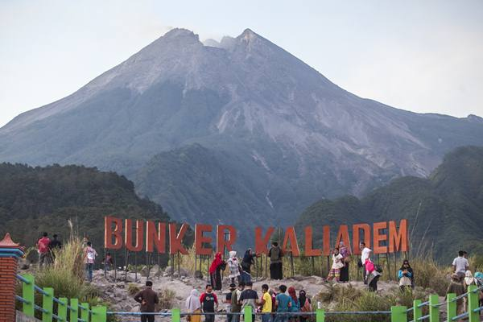

Yogyakarta Is Neverending Asia
Yogyakarta, bersama dengan kota kembarnya Surakarta (Solo), merupakan tempat lahirnya peradaban di Jawa. Kota ini adalah pusat kekuasaan yang menghasilkan candi Borobudur dan Prambanan yang megah pada abad ke-8 dan ke-9 dan kerajaan Mataram baru yang kuat pada abad ke-16 dan ke-17. Yogyakarta dikenal dengan slogan “Jogja The Never Ending Asia” karena daya tariknya yang tak ada habisnya. Hari ini juga dikenal sebagai “Jogja Istimewa”, sebuah tagline yang mengelaborasi nilai-nilai khusus. Kota ini merupakan salah satu pusat kebudayaan terkemuka di Indonesia. Dari berjalan-jalan di museum keraton atau Keraton (Istana Sultan), hingga nongkrong di Alun Alun yang terkenal, hingga menyaksikan perajin perak menghasilkan perhiasan yang luar biasa di Kotagede dan mungkin mencoba berbelanja secara royal di jalan Malioboro. Mengejar matahari terbit di candi terkenal seperti Prambanan, Candi Ijo, Candi Ratu Boko dan Borobudur di kota tetangga Magelang, hanyalah beberapa dari banyak cara untuk tidak pernah bosan di kota yang relatif kecil namun ramai ini.
-
Candi Borobudur
-
Candi Prambanan
-
Candi Ratu Boko
Keajaiban Warisan Kuno
Anda dapat mengalami kelima keajaiban di kota yang berseni ini. Mulai dari memanjakan diri dengan keajaiban alam, dengan mengunjungi pantai-pantai indah dan lanskap fotogenik. Parangtritis, Indrayanti, Pok Tunggal, Siung, Krakal, dan Jogan adalah beberapa pantai terkenal di kota ini. Tempat-tempat menakjubkan seperti Puncak Becici, Pinus Pengger, dan Jurang Tembelan hanyalah beberapa dari banyak destinasi wisata alam yang menarik di Yogyakarta!
Untuk kulinernya, jangan lupa untuk mencoba Gudeg terlebih dahulu, masakan khas dari resep tradisional Jawa yang menjadi ikon kota ini. Bakpia, merupakan jajanan tradisional dengan berbagai rasa yang menggoda dan populer untuk oleh-oleh. Untuk minuman, Anda bisa mencoba Jamu, minuman racikan ramuan alami berdasarkan tradisi kuno yang digunakan untuk pengobatan alami.
Batik adalah kekayaan nasional berdasarkan kata Jawa “amba” dan “titik”, yang berarti menulis titik-titik. Ini adalah seni mendekorasi kain menggunakan lilin dan proses pewarnaan. Yogyakarta memiliki pola batik khas yang biasanya dibuat dengan dasar putih cerah. Beberapa motif yaitu Parang Kusumo, Kawung, dan Truntum, masing-masing diciptakan dengan filosofi khusus di balik setiap titiknya.
-
Puncak Becici

-
Jurang Tembelan
-
Pantai Parangtritis

Ada Batik Tulis, Batik Cap, Batik Print, dan hasil campuran dari teknik tersebut. Yang paling mahal adalah Batik Tulis yang terbuat dari 100% ornamen cat tangan. Ini akan menjadi lebih mahal jika terbuat dari kain sutra yang berharga. Membuat Batik Tulis berkualitas baik dapat berkisar dari satu hari produksi hingga proses berbulan-bulan yang teliti, tergantung pada ukuran dan detail desain yang rumit. Wayang juga merupakan warisan seni menakjubkan yang dikenal dari Yogyakarta. Ada Wayang Kulit atau wayang kulit, dimainkan pada pertunjukan wayang kulit oleh dalang atau dalang melalui layar yang diterangi lampu. Wayang Orang adalah pertunjukan seukuran aslinya yang menggambarkan pesan filosofis yang sama dari cerita kuno dan ditampilkan oleh pria dan wanita dalam kostum tradisional yang rumit. Anda dapat menemukan keajaiban Rekreasi, dengan mengunjungi desa-desa wisata di Yogyakarta. Tembi, Pentingsari, dan Nglanggeran adalah tiga tempat yang bisa Anda mulai. Rasakan kehidupan sehari-hari asli penduduk setempat, dan pelajari beberapa keterampilan baru, seperti memainkan gamelan, menenun janur, dan menampilkan tarian tradisional Jawa!
-
Batik Tulis Jogja
-
Gamelan Jogja
-
Tarian tradisional Jogja
Keajaiban petualangan juga banyak sekali di Yogyakarta. Dimulai dengan menjelajahi Taman Nasional Gunung Merapi, mengendarai jip yang mendebarkan, dan mendaki Gunung Nglanggeran, gunung berapi purba yang terletak di desa yang indah. Panjat tebing dapat dilakukan di pantai Siung, sementara cave tubing adalah daya tarik utama di Goa Pindul, dan Jika Anda mencari pengalaman adrenalin tinggi yang diremehkan, maka Goa Jomblang adalah tempat yang tepat untuk Anda. Terletak di Desa Jetis Wetan, Goa Jomblang adalah goa vertikal besar sedalam 80 meter yang secara alami dihiasi oleh formasi karst dan tumbuhan, seperti stalagmit, stalaktit, batu kristal, dan tumbuhan paku. Anda juga bisa menemukan sungai bawah tanah yang berarus deras di sini. Tidak hanya ahli gua, para pemula juga dapat menikmati keajaiban gua ini karena mereka akan diberikan arahan oleh pemandu gua di sini. Yogyakarta memang kota dengan banyak atraksi untuk dinikmati. Semua ini dan masih banyak lagi untuk dijelajahi telah membawa Yogyakarta sebagai tujuan kedua yang paling banyak dikunjungi di Indonesia setelah Bali.
-
Taman Nasional Gunung Merapi
-
Bunker Kaliadem
 -
Goa Pindul